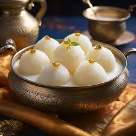

Gulab Jamun
Ingredients
- Nestlé MILKMAID Mini
- 2 cups (200 gm)
- Flour
- 600 gms
- Grated Paneer
- 200 gm
- Sooji/Rava
- 1½ tsp
- Baking Powder
- 1½ tsp
- Baking Soda
- For Frying
- Oil
- 2 litres
- Water
- 1 kg
- Sugar
- 6-8 nos
- Coarsely Crushed Cardamom
Recipe
- Combine sugar and water in a pan and bring to a boil to create the syrup. Remove from heat, add cardamom, and set aside to cool.
- In a mixing bowl, combine flour, paneer, sooji, Nestlé MILKMAID, baking powder, and baking soda. Mix gently to form a soft dough, avoiding over-kneading.
- Divide the dough into 30-35 portions and gently shape them into round balls.
- Heat oil on low flame and fry the balls until they turn golden brown.
- Transfer the fried Gulab Jamuns into the cooled sugar syrup. Once all the Gulab Jamuns are added, bring the syrup to a boil again briefly, then remove from heat.
- Enjoy your homemade Gulab Jamun warm, garnished with your favourite toppings.

Rasgulla
Ingredients
- Milk
- 1 litre
- Lemon Juice
- 2 tbsp
- Water
- 4 cups (1 litre)
- Sugar
- 2 cups (400 gm)
- Cardamom Powder
- ½ tsp
- Rose Water
- 1 tsp (optional)
Recipe
- Boil the milk in a pan. Once it starts boiling,
- lower the flame and add lemon juice gradually while stirring. This will curdle the milk.
- Strain the curdled milk using a muslin cloth to separate the whey from the chhena (curdled solids). Wash the chhena with cold water to remove any lemon flavor.
- Knead the chhena for 8-10 minutes until it forms a smooth and soft dough.
- Divide the dough into small portions and roll them into smooth balls, ensuring there are no cracks.
- In a deep pan, combine sugar and water, and bring it to a boil to make the sugar syrup. Add cardamom powder for flavor.
- Gently add the chhena balls into the boiling sugar syrup. Cover the pan and cook on medium heat for 15 minutes, ensuring the syrup doesn't boil over.
- Once the Rasgullas double in size and become spongy, remove from heat. Let them cool completely in the syrup.
- Serve chilled with a drizzle of rose water for added flavor.
